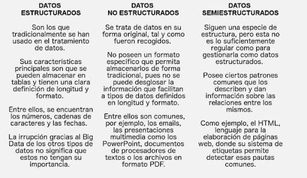

1. Introducción Big Data
1.1. Big Data
Big Data es una colección de conjuntos de datos que son lo suficientemente grandes y complejos como para hacer obsoleta la arquitectura tradicional de almacenamiento y procesamiento de datos.
¿ Cuando considerar la utilización la arquitectura Big Data?
Escenarios
- Los datos son demasiado grandes para que las tiendas de datos tradicionales los procesen.
- Transformación y análisis de datos no estructurados.
- Necesidad de analizar datos en tiempo real con baja latencia.
Tipos de cargas de trabajo
Los tipos de cargas de trabajo que se pueden considerar incluyen:
- Procesamiento por lotes de datos.
- Procesamiento en tiempo real de datos en movimiento.
Las 3 Vs del Big Data son Volumen, Velocidad y Variedad.
- El Volumen se refiere a la cantidad de datos
- La Velocidad se refiere a la velocidad a la que se generan y procesan los datos
- La Variedad se refiere a los diferentes tipos de datos disponibles.
Big Data es importante en el mundo actual porque puede utilizarse para abordar problemas empresariales que antes eran insolubles, generar información valiosa, perfeccionar campañas y técnicas de marketing, entrenar máquinas, modelado predictivo y otras aplicaciones avanzadas de análisis, reducir costos, ahorrar tiempo, comprender mejor las condiciones del mercado, vencer a grandes competidores y retener a clientes leales.
1.2. Historia
El término ‘Big Data’ ha estado en uso desde principios de los años 90. Aunque no se sabe exactamente quién fue el primero en usar el término, la mayoría de las personas atribuyen a John R. Mashey (que en ese momento trabajaba en Silicon Graphics) por hacer popular el término.

1.3. Tecnologías
Hay muchas tecnologías populares de Big Data cómo Hadoop, Spark y bases de datos NoSQL. Estas tecnologías pueden compararse en función de sus casos de uso y capacidades.
Las tecnologías de Big Data se pueden dividir en cuatro categorías principales:
- Almacenamiento de datos: Las tecnologías de Big Data que se ocupan del almacenamiento de datos tienen la capacidad de recuperar, almacenar y gestionar grandes conjuntos de datos. Está compuesto por infraestructura que permite a los usuarios almacenar los datos para que sean fácilmente accesibles. La mayoría de las plataformas de almacenamiento de datos son compatibles con otros programas. Dos herramientas comúnmente utilizadas son Apache Hadoop y MongoDB.
- Minería de datos: La minería de datos extrae patrones y tendencias útiles a partir del conjunto de datos sin procesar. Tecnologías cómo Rapidminer y Presto pueden convertir datos estructurados y no estructurados en información utilizable.
- Análisis de datos: El análisis de datos utiliza técnicas avanzadas cómo el aprendizaje automático y el análisis estadístico para obtener información a partir del conjunto de datos.
- Visualización de datos: La visualización de datos es importante para comprender el Big Data porque permite a los tomadores de decisiones ver analíticas presentadas visualmente para que puedan comprender conceptos difíciles o identificar nuevos patrones.
Cada una de estas categorías está asociada con ciertas herramientas, y deberás elegir la herramienta adecuada para tus necesidades empresariales dependiendo del tipo de tecnología de Big Data que se requiera.
1.4. Aplicaciones
Big Data se utiliza en diversas industrias cómo: la salud, las finanzas, el comercio minorista, etc. Los beneficios del uso del Big Data incluyen:
- Una mejor toma de decisiones
- Un aumento de la eficiencia
- Capacidad para descubrir nuevos conocimientos
Sin embargo, también hay desafíos asociados con el uso del Big Data cómo gestionar grandes volúmenes de datos y garantizar la privacidad de los datos.
1.5. Big Data y Aprendizaje Automático
Big data y aprendizaje automático son dos campos estrechamente relacionados y complementarios. * Big data se refiere a conjuntos de datos extremadamente grandes y complejos que son difíciles de procesar utilizando métodos tradicionales. * El aprendizaje automático, por otro lado, es una rama de la inteligencia artificial que se enfoca en desarrollar algoritmos que permitan a las máquinas aprender de los datos y mejorar su rendimiento con el tiempo.
El aprendizaje automático aprovecha el big data para entrenar modelos más precisos y confiables. Cuanto más datos haya disponibles, más precisos y confiables serán los modelos del aprendizaje automático. El aprendizaje automático tiene aplicaciones amplias en el procesamiento y análisis del big data, cómo la clasificación y categorización automática de datos, la detección de anomalías y la predicción de resultados futuros.
La combinación de big data y aprendizaje automático ofrece beneficios significativos. Permite descubrir información valiosa oculta en grandes volúmenes de datos, mejorar la toma de decisiones basada en datos, automatizar tareas y optimizar procesos empresariales.
1.6. Fuentes u origen de los datos
Los datos en Big Data pueden ser clasificadas en tres tipos según su origen:
- Generados por máquinas: procedentes de sensores (GPS, contadores…), Web Log Data (redes, aplicaciones…), procedentes de puntos de venta (códigos de barras de un producto) y financieros (operaciones bancarias).
- Generados por personas: formularios, registros de contabilidad…
- Datos externos: redes sociales, patentes, datos web, datos móviles, etiquetas RFID (rastreo electrónico) y códigos de barras, datos de ubicación, sensores de datos, entre otros.
Según su estructura se pueden clasificar en tres tipos:
- Datos estructurados: son aquellos que se encuentran ordenados y organizados en una estructura predefinida, cómo una tabla o una base de datos relacional. Estos datos son fáciles de gestionar y analizar, ya que su estructura permite una mayor predictibilidad. Ejemplos de datos estructurados incluyen registros en tablas, ficheros XML asociados a un esquema, y facturas autogeneradas al realizar una compra.
- Datos semiestructurados: son aquellos que tienen cierta estructura, pero no están organizados en una estructura rígida cómo los datos estructurados. Ejemplos de datos semiestructurados incluyen documentos JSON y XML sin esquema asociado.
- Datos no estructurados: son aquellos que no tienen una estructura predefinida y pueden ser difíciles de gestionar y analizar. Ejemplos de datos no estructurados incluyen publicaciones en redes sociales, vídeos, imágenes, y texto libre.

1.7. Infraestructura
Una infraestructura para Big Data debe facilitar la recopilación, el almacenamiento y el análisis de grandes volúmenes de datos, que pueden estar en diferentes formatos y generándose en tiempo real. Para ello, se utilizan tecnologías y servicios especiales que han sido creados específicamente para dar solución al procesamiento de estos enormes conjuntos de datos.
Algunos de los principales elementos de hardware y software que integran una solución arquitectónica de Big Data son:
- Hardware: servidores, dispositivos de almacenamiento, redes de alta velocidad.
- Software: sistemas operativos, bases de datos, herramientas de análisis y visualización de datos.
Estos son algunos ejemplos de infraestructuras para procesar el Big Data:
- Apache Hadoop: una de las soluciones más conocidas para analizar Big Data, que utiliza un marco de trabajo de código abierto para almacenar y procesar grandes conjuntos de datos.
- Apache Spark: esta herramienta permite almacenar gran parte de los datos de procesamiento en la memoria y en el disco, lo que se traduce en una mayor rapidez.
- Bases de datos NoSQL: como Cassandra, son utilizadas para almacenar y gestionar grandes volúmenes de datos no estructurados.
La infraestructura para procesar el Big Data debe ser capaz de manejar grandes volúmenes de datos y proporcionar herramientas para su análisis y visualización.
1.8. Almacenamiento
Hay muchas opciones disponibles para almacenar grandes volúmenes de datos. * Los sistemas de archivos distribuidos, como Hadoop Distributed File System (HDFS) y Google File System (GFS), son una opción popular para almacenar grandes conjuntos de datos en múltiples servidores. * Los servicios de almacenamiento en la nube, como Amazon S3 y Microsoft Azure Blob Storage, también son opciones populares para almacenar datos en la nube.
La gestión efectiva de los datos es esencial para garantizar su integridad y disponibilidad. Esto incluye: * La implementación de medidas de seguridad adecuadas para proteger los datos contra el acceso no autorizado * La realización de copias de seguridad regulares para garantizar la recuperación en caso de pérdida de datos * La implementación de políticas y procedimientos para garantizar que los datos se manejen de manera responsable y ética.
1.9. Procesamiento
Dos opciones de procesamiento:
-
En tiempo real
- El procesamiento en tiempo real del Big Data implica analizar datos a medida que se generan para tomar decisiones o desencadenar acciones en tiempo real.
- Por ejemplo, el procesamiento en tiempo real puede utilizarse para monitorear feeds sociales en busca de menciones de una marca o producto en particular.
-
Por lotes o en Batch
- El procesamiento por lotes implica analizar grandes volúmenes de datos a la vez en lugar de en tiempo real.
- Este enfoque puede ser útil cuando se trata con datos históricos o cuando se realizan análisis complejos que requieren más tiempo.
1.10. Análisis con Big Data
Tipos de análisis de big data:
- Predictivo
- El análisis predictivo implica utilizar técnicas estadísticas para hacer predicciones sobre eventos futuros basándose en datos históricos. Este enfoque puede aplicarse para generar conocimientos sobre tendencias o comportamientos futuros.
- De diagnóstico
- El análisis de diagnóstico utiliza algoritmos para descubrir patrones y relaciones dentro de grandes conjuntos de datos. Este enfoque puede aplicarse para extraer información útil de grandes volúmenes de datos no estructurados o semiestructurados.
- Descriptivo
- El análisis descriptivo es un método de análisis de datos que se utiliza para resumir y describir sus características principales. Se utiliza comúnmente para proporcionar una visión general de los datos y para identificar patrones y tendencias.
- En el contexto de Big Data, el análisis descriptivo puede utilizarse para obtener información a partir de conjuntos de datos grandes y complejos. Por ejemplo, una empresa podría utilizar el análisis descriptivo para entender la demografía de su base de clientes o para identificar patrones en el comportamiento de los clientes.
- Prescriptivo con Big Data
- El análisis prescriptivo es un tipo de análisis de datos que utiliza técnicas avanzadas de análisis, como el aprendizaje automático y los algoritmos de optimización, para sugerir acciones que se pueden tomar para lograr un resultado deseado.
- En el contexto de Big Data, el análisis prescriptivo puede utilizarse para tomar decisiones basadas en datos a partir de la información obtenida a partir de conjuntos de datos grandes y complejos. Por ejemplo, una empresa podría utilizar el análisis prescriptivo para optimizar su cadena de suministro o para determinar la mejor estrategia de precios para sus productos.
1.11. Visualización de datos
La visualización de datos es la presentación de datos en formato ilustrado o gráfico. Permite a los tomadores de decisiones ver la analítica presentada de forma visual, de modo que puedan captar conceptos difíciles o identificar nuevos patrones. Con la visualización interactiva, se puede llevar el concepto un paso adelante utilizando tecnología para profundizar en diagramas y gráficas para observar mayor detalle, cambiando de forma interactiva qué datos se ven y cómo se procesan.
Hay muchas herramientas disponibles para la visualización de Big Data. Algunas de las herramientas más populares son Tableau, Infogram, ChartBlocks, Datawrapper y Ploty. Estas herramientas permiten crear tablas, gráficos, mapas y otros tipos de visualizaciones para ayudar a comprender y comunicar los datos.
La visualización de datos es importante porque permite transmitir conceptos de manera universal y rápida. También puede ayudar a identificar áreas que necesitan atención o mejoras y esclarecer qué factores influencian el comportamiento de los clientes.